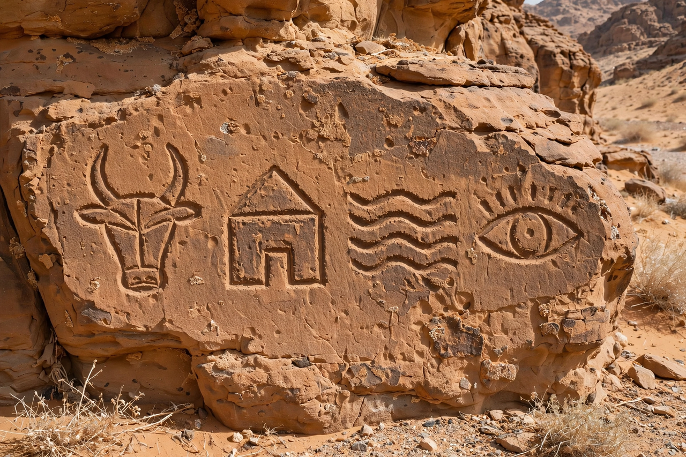

Proto-Sinaitic script

| Proto-Sinaitic script | |
| Type | Abjad |
|---|---|
| Period | c. 1850–1550 BC |
| Region | Sinai Peninsula; Canaan (Proto-Canaanite) |
| Descendants | Phoenician alphabet, and through it most modern alphabets |
The Proto-Sinaitic script is a Middle Bronze Age writing system known from a small corpus of inscriptions found in the Sinai Peninsula, at the turquoise mines of Serabit el-Khadim and in Wadi el-Hol in Egypt. Dating to roughly the 19th–16th centuries BC, it is widely regarded as the earliest alphabetic script and the ancestor of the Phoenician alphabet, from which the Greek, Latin, Hebrew, Arabic, and most other modern alphabets ultimately descend.
Discovery and decipherment
The inscriptions were discovered by Flinders Petrie's expedition in 1904–05 and studied by Alan Gardiner, who in 1916 identified the recurrent sequence l-b-ʿ-l-t, "to Baʿalat", reading the signs acrophonically: each sign depicted an object and stood for the first consonant of the Semitic word for that object. Thus a depiction of an ox head stood for /ʔ/ (from ʾalp, "ox"), a house plan for /b/ (bayt, "house"), and water for /m/ (maym, "water").
Origin
The signs were adapted from Egyptian hieroglyphs and hieratic by Semitic-speaking workers — soldiers, miners, and labourers in Egyptian service — who repurposed the pictures for their own West Semitic language. The same system, used in Canaan proper, is called Proto-Canaanite. Only consonants were written, making the script an abjad.
Legacy
By about 1050 BC the script had developed in Phoenicia into the linear 22-letter Phoenician alphabet. The Greeks adapted it (adding vowels) to create the Greek alphabet, the Etruscans and Romans carried it westward, and Aramaic offshoots spread eastward — making Proto-Sinaitic the single source of nearly all alphabetic writing in use today.